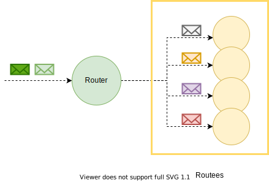
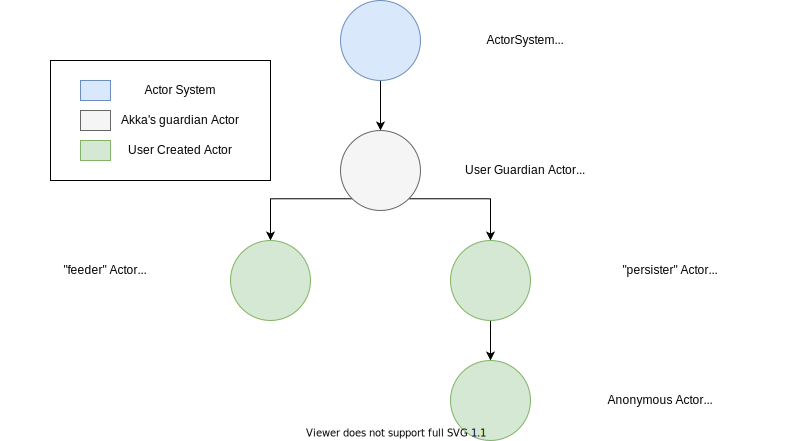

Routing Akka
Josep Prat  - 2021/01/xx
- 2021/01/xx
Link to the companion Repo

Questions:
- What are Akka Routers?
- What is the difference between Pool and Group?
- When to use Pool?
- When to use Group?
- What are the use cases for each Routing Strategy?
What are Akka Routers?
Routers are Akka's mechanism to distribute messages to a set of Actors. Enabling this way, parallel message processing.
What are Akka Routers?
Typically, an Actor (Router) will configure a router instance with several actors (Routee).
What are Akka Routers?
There are 2 types of Routers in Akka, Pool and Group. The difference between them lies on where the Routees are created.
What is the difference between Pool and Group?
Pool Router: All Routees are children of the Router Actor.
Group Router: All Routees are created outside of the Router Actor.
When to use Pool?
Given that the Router must create the Routees, it is responsible for its lifecycle. The Pool Router will automatically remove terminated actors for the pool.
When to use Pool?
Pool Routers are best used for local actors. However, in Classic one could deploy (some of) the Routees in other nodes / servers.
When to use Pool?
Use it if you prefer:
- Managed membership on the Router.
- Control over the Routees lifecycle.
- Local actors spawned.
How to use Pool Routers?
Given this worker in Akka Clasic:
import akka.actor.Actor
import akka.actor.ActorLogging
import akka.actor.Props
import scala.annotation.tailrec
import PrimeFactorization._
import io.github.jlprat.akka.lnl.routers.classic.PrimeFactorizationRouter.PrimeFactor
object PrimeFactorization {
/**
* Gives the prime factors of the given number
* @param n remaining of the number to factorize
* @param primes stream of primes
* @param factors already calculated factors
* @return
*/
@tailrec
def primeFactors(n: Long, factors: Seq[Long]): Seq[Long] = {
if (n == 1) factors.reverse
else {
// This loop is not a Range because Long rages exceed the maximum length
var i = 2L
while (!(n % i == 0)) {
i = i + 1
}
primeFactors(n / i, i +: factors)
}
}
def props(): Props = Props.create(classOf[PrimeFactorization])
}
class PrimeFactorization extends Actor with ActorLogging {
override def receive: Actor.Receive = {
case PrimeFactor(n) =>
val init = System.currentTimeMillis()
log.info(
"Primes for {} is {} ({}ms)",
n,
primeFactors(n, Seq.empty).mkString(", "),
System.currentTimeMillis() - init
)
}
}How to use Pool Routers?
We create the following router in Akka Classic:
val router = system.actorOf(RoundRobinPool(5)
.props(PrimeFactorization.props()), "PrimeFactorizationRouter")How to use Pool Routers?
Go and run PrimeFactorizationMain.
How to use Pool Routers?
In case of Routee another supervision strategy is needed, it can be configured
in the Pool builder using .withSupervisorStrategy method.
How to use Pool Routers?
In Akka classic, one can define dynamically sized pools:
val resizer = DefaultResizer(lowerBound = 2, upperBound = 15)
val router: ActorRef =
context.actorOf(RoundRobinPool(5, Some(resizer)).props(Props[Worker]()), "router")How to use Pool Routers?
Given this worker in Akka Typed:
import akka.actor.typed.scaladsl.Behaviors
import akka.actor.typed.Behavior
import scala.annotation.tailrec
object PrimeFactorization {
sealed trait Command
case class PrimeFactor(n: Long) extends Command
/**
* Gives the prime factors of the given number
* @param n remaining of the number to factorize
* @param primes stream of primes
* @param factors already calculated factors
* @return
*/
@tailrec
def primeFactors(n: Long, factors: Seq[Long]): Seq[Long] = {
if (n == 1) factors.reverse
else {
// This loop is not a Range because Long rages exceed the maximum length
var i = 2L
while (!(n % i == 0)) {
i = i + 1
}
primeFactors(n / i, i +: factors)
}
}
def apply(): Behavior[Command] =
Behaviors.setup { context =>
Behaviors.receiveMessage[Command] {
case PrimeFactor(n) =>
context.log.info(
"Primes for {} is {}",
n,
primeFactors(n, Seq.empty).mkString(", ")
)
Behaviors.same
}
}
}How to use Pool Routers?
We create the following router in Akka Typed:
...
val pool = Routers.pool(4) {
Behaviors.supervise(PrimeFactorization())
.onFailure(SupervisorStrategy.restart)
}
val router = ActorSystem[PrimeFactorization.Command](pool, "PrimeFactorization")
toFactor.foreach { n =>
router.tell(PrimeFactorization.PrimeFactor(n))
}
...How to use Pool Routers?
Go and run PrimeFactorizationMain.
How to use Pool Routers?
Remember to supervise the Routee behavior if you want the pool size to be stable in size.
Detour: Actor Path
An Actor Path is the hierarchical path of actor names starting at the "User Guardian" actor.
Detour: Actor Path
Detour: Actor Path
In Akka Classic, an actor can be retrieved by the given Actor Path.
In Akka Typed, one must should use the newly introduced Receptionist.
When to use Group?
Group Routers are best used when the workers might be created in different places.
Even, in different ActorSystems.
When to use Pool?
Use it if you prefer:
- Manual membership on the Router.
- Delegate lifecycle of Routees elsewhere.
- Routees not as children of the Router.
- Cluster friendly.
How to use Group Routers?
Given the same Routee as before, find the Classic Router:
val system = ActorSystem("PrimeFactorization")
val actors = (1 to 5).map { i =>
system.actorOf(PrimeFactorization.props(), s"routee$i")
}.toList
val paths = actors.map(_.path.toStringWithoutAddress)
val group = system.actorOf(RoundRobinGroup(paths).props(), "PrimeFactorizationGroupRouter")
toFactor.foreach { number =>
group ! PrimeFactor(number)
}
How to use Group Routers?
Given the same Routee as before, find the Typed Router:
val initiator = Behaviors.setup[Unit] { ctx =>
val routees = (1 to 5).map(i =>
ctx.spawn(PrimeFactorization(), s"Routee$i")).toList
routees.foreach { actorRef =>
ctx.system.receptionist
.tell(Receptionist.Register(serviceKey, actorRef))
}
val group = Routers.group(serviceKey)
val router = ctx.spawn(group, "prime-factor-pool")
toFactor.foreach { n =>
router.tell(PrimeFactorization.PrimeFactor(n))
}
Behaviors.empty
}
val system = ActorSystem[Unit](initiator, "PrimeFactorizationGroup")How to use Group Routers?
The Group Router will ask the Receptionist about all actors registered with the given key.
To avoid races, the router will stash any incoming message until the Receptionist replies.
What are the use cases for each Routing Strategy?
Akka comes with these different routing strategies:
- Round Robin
- Random
- Consistent Hashing
- Balancing
- Smallest Inbox
- Broadcast
- Scatter Gather First Completed
- Tail Chopping
Round Robin Strategy
| Presence | Akka Classic and Akka Typed (default for Pool) |
|---|---|
| How it works | Router sends a message to each routee, always following the same order. |
| Use case | Work load for all messages is equivalent. Messages don't need to be processed by any specific routee. |
Random
| Presence | Akka Classic and Akka Typed (default for Group) |
|---|---|
| How it works | Router sends a message to any routee. |
| Use case | Worker size is dynamic. Messages don't need to be processed by any specific routee. |
Consistent Hashing
| Presence | Akka Classic and Akka Typed |
|---|---|
| How it works | Given a way to calculate a hash for incoming messages, the Router will use it to select a Routee. Selection is consistent,as long as number of Routees stay the same. |
| Use case | Distribution of work is needed. Each Routee holds only a part of the complete Application State. |
Balancing
| Presence | Akka Classic (only for Pool) |
|---|---|
| How it works | All Routees will share the same mailbox. Given enough messages in the mailbox, all Routees will share an equal work load. |
| Use case | Constant utilization of Routees is desired. Messages don't need to be processed by any specific routee. Routees can't be sent messages directly. |
Smallest Inbox
| Presence | Akka Classic (only for Pool) |
|---|---|
| How it works | Router picks the Routee according to its idle state and size of their mailbox. Remote Actors have the lowest priority since mailbox size is unknown. |
| Use case | Constant utilization of Routees is desired. Messages don't need to be processed by any specific routee. Routees can be sent messages directly. |
Broadcast
| Presence | Akka Classic |
|---|---|
| How it works | Each message is sent to all the Routees. |
| Use case | Any given message must be processed by all Routees, i.e. each Routee must have a copy of the full application State. |
Scatter Gather First Completed
| Presence | Akka Classic |
|---|---|
| How it works | Each message is sent to all the Routees, then waits for replies. Only first reply is sent ot he original sender, the others are discarded. |
| Use case | A problem might be solved using different algorithms/strategies and we want the fastest response time possible. Time is crucial at expense of resources. |
Tail Chopping
| Presence | Akka Classic |
|---|---|
| How it works | Message is sent to a random Routee, after some delay to a second, and so on. Only first reply is sent ot he original sender, the others are discarded. |
| Use case | Some times a worker might get overloaded with work, if after some time there is no answer, the message is passed to backup workers, hoping they won't be under heavy load. |
Tail Chopping
| Alternative Use case | We want fast response time for a problem with different possible algorithms
which have a low best case (Ω) but a high worst case (O)
Time is important but also of resources.
|
|---|
Thanks! And leave feedback!
Write Feedback!
Josep Prat - 2021/01/xx